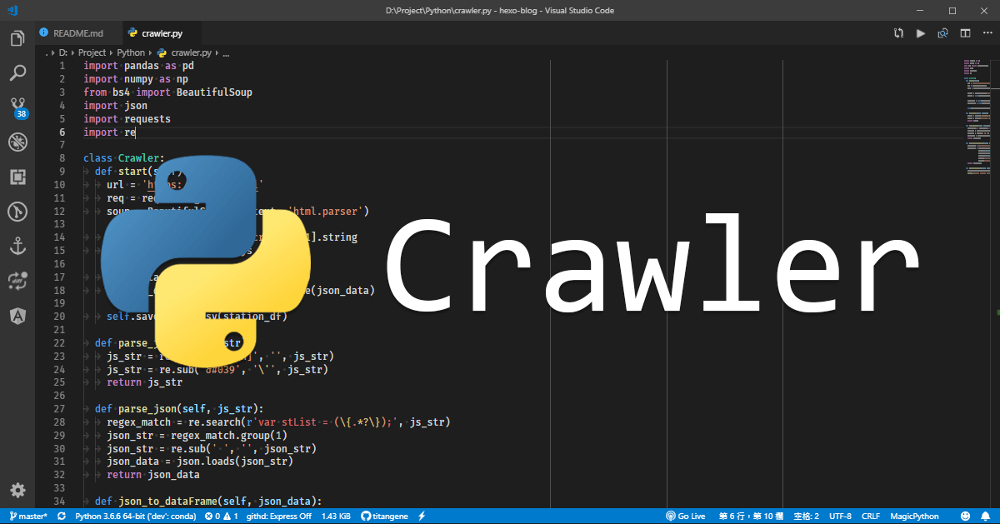
如何將 Python 爬蟲程式定期執行？使用 Windows 的使用者可以選擇「工作排程器」來解決。
最近有些資料想透過爬蟲來擷取，而且希望可以定期 (例如：每 10 分鐘一次) 自動執行爬蟲程式，因此就有了這篇筆記。下面介紹如何以 Windows 工作排程器來定期執行爬蟲程式。
目標
每 10 分鐘自動執行 Python 爬蟲程式，將爬蟲抓到的最新降雨量資料存入 CSV 檔內收集。
準備
- Windows
- Python 環境：建議安裝 Anaconda，可參考 用 Conda 建立虛擬環境和管理相依套件
- Python 套件 (這是本篇爬蟲範例所需的相依套件，可依各自需求來選擇)
Python 爬蟲程式原始碼
source code: titangene/cwb-opendata-crawler-demo/crawler.py
簡單說明一下程式的執行步驟：
- 利用 Python 的 Requests 套件來建立 HTTP 的 GET 請求，從中央氣象局提供的開放資料 API 中取得資料，回傳的格式是 JSON
- 解析 API 回傳的 JSON 資料，並將 JSON 轉成 Pandas 的
DataFrame型別的資料格式 - 將
DataFrame儲存成 CSV 檔保存資料
若想了解中央氣象局開放資料的相關內容，詳情可參考 中央氣象局開放資料 - 開發指南。
Python 爬蟲程式的批次檔
建立一個副檔名為 .bat 的批次檔，批次檔是用來執行 Python 爬蟲程式，因此就能讓 Windows 工作排程器在定期時間自動執行批次檔，以達成自動化執行爬蟲的目的。
下面就來說明批次檔每行都做了甚麼：
- 第一行：切到指定目錄
- 第二行：指定 Python 虛擬環境 (可參考 用 Conda 建立虛擬環境和管理相依套件。如果要在全域環境下執行就不需要這行)
- 第三行：執行 Python 爬蟲程式
- 第四行：若想查看 Python 爬蟲程式執行過程中所輸出 (也就是執行
print方法的部分) 內容，就需要取消這行的註解REM：單行註解pause：用來暫停批次檔的執行
1 | |
source code: titangene/cwb-opendata-crawler-demo/crawler.bat
Windows 工作排程器 簡介
可預先設定工作在特定時間或指定時間時，會自動執行程式或批次檔以達成工作自動化。下圖為 Windows 10 的工作排程器介面：
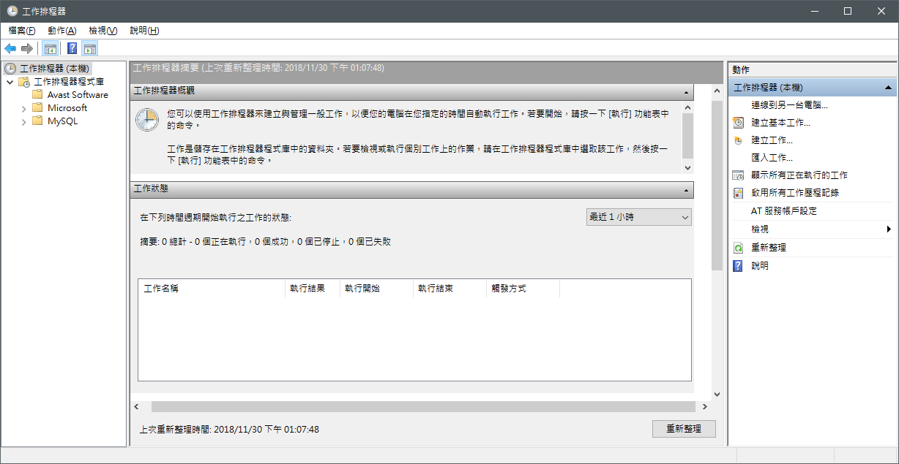
建立工作，設定定期執行爬蟲程式
開啟 Windows 的「工作排程器」，點擊右上角的「建立工作」
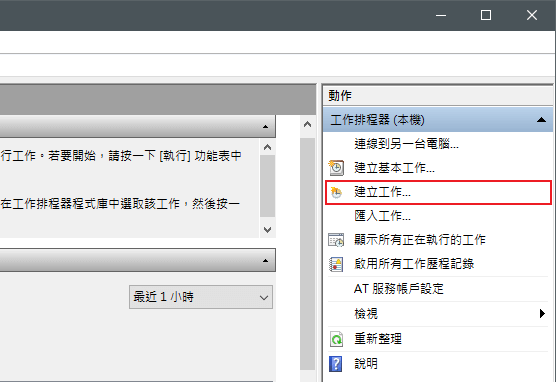
自訂工作名稱，若有權限需求可勾選「以最高權限執行」選項
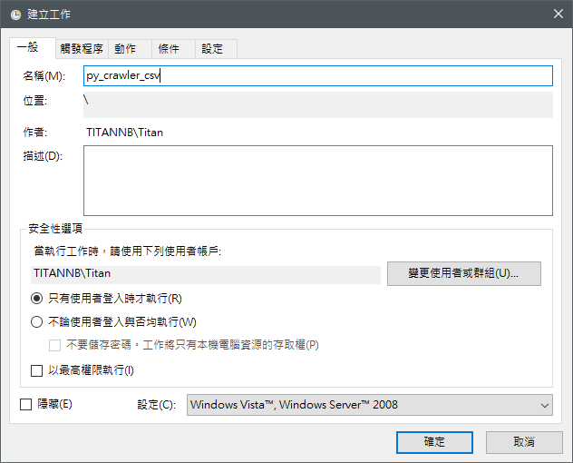
接著新增「觸發程序」
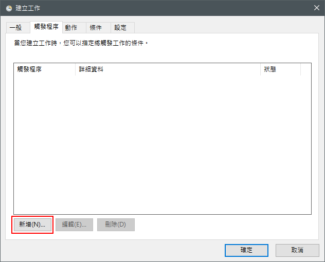
設定工作的開始時間，並選擇「僅一次」，以及設定工作要每隔多久就執行一次，並且要持續多久時間
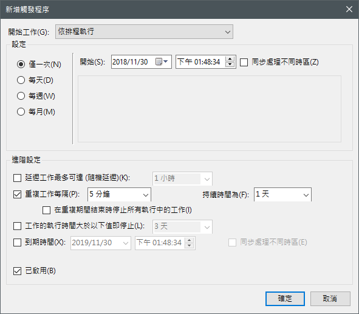
然後新增「動作」
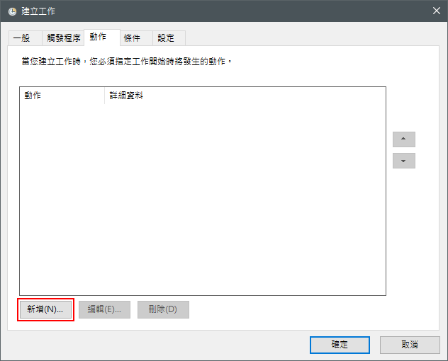
設定要自動執行的程式，這邊選擇的就是剛剛提到的 批次檔 (原始碼)
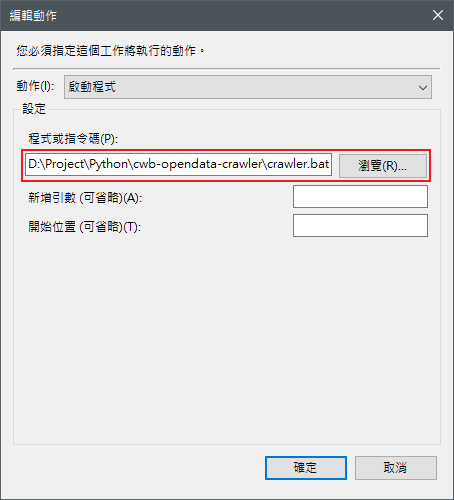
如果設定好了就可以按確定完成建立工作，此時就會看到在「工作排程器程式庫」內的工作清單中，多了剛剛新增的工作
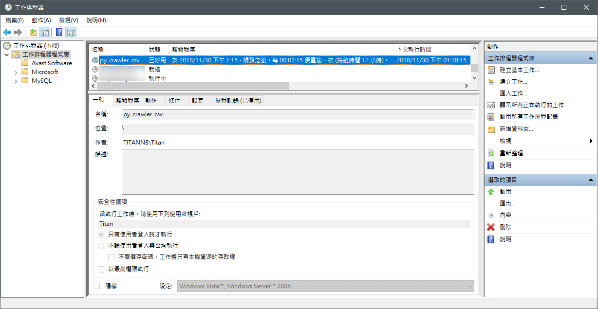
成果
可以看到爬蟲程式會在定期自動執行，執行的時候會跳出一個 cmd 視窗。若剛剛提到的 批次檔 內沒有將 REM pause 這行註解，就會看到爬蟲程式執行完成後，不會自動關閉 cmd 視窗，這是為了可以立即看到該次爬蟲執行過程中輸出的訊息。
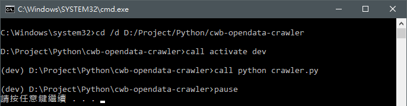
下圖就是自動執行爬蟲所抓到的資料：
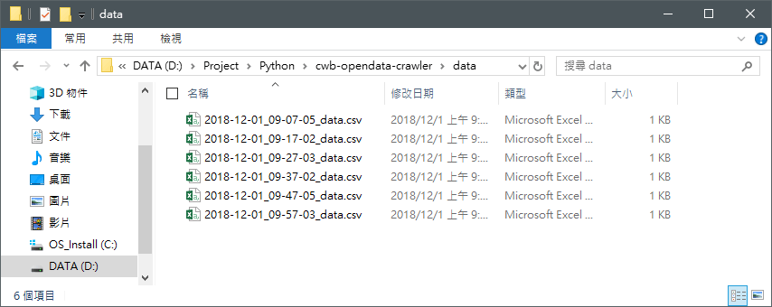
完整 source code：titangene/cwb-opendata-crawler-demo